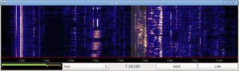

A software-defined radio application that uses jack for audio transport and Gtk for the GUI.
libfftw3, jack, gtk
Gordon JC Pearce (gordon@gjcp.net)
Gordon JC Pearce (gordon@gjcp.net)
You can download this project in either zip or tar formats.
You can also clone the project with Git by running:
$ git clone git://github.com/gordonjcp/lysdr